The Hong Kong University of Science and Technology (Guangzhou)
Information Hub
MPhil Student, supervised by Prof. Xuming Hu.
Sep. 2026 — Jun. 2028 (expected)Guangzhou, China
Hello, I’m Hao Tan（谭昊）.
I am an MPhil student at The Hong Kong University of Science and Technology (Guangzhou), supervised by Prof. Xuming Hu. Previously, I received my bachelor’s degree from Guangdong University of Technology, where I was advised by Prof. Jinghui Qin. My research focuses on developing efficient, perceptive, and trustworthy artificial intelligence, while exploring interdisciplinary applications of AI.
Outside of research, I enjoy reading detective and mystery novels. My favorite authors are Ellery Queen and Shinzo Mitsuda.
If you have any questions or would like to discuss research or collaborate, please feel free to contact me at tanhao4869@gmail.com.
My research interests lie in building general-purpose world models for open-world environments. This vision drives my work across three core dimensions: Efficiency, Perceptive, and Trustworthy, while actively exploring intersections with healthcare and life sciences.
Efficiency. Focusing on addressing generalization and adaptation challenges for AI models under resource-constrained or data-sparse conditions:
Perceptive. Focusing on how AI models extract deep semantics from multimodal signals to achieve fine-grained understanding of human states and intentions:
Trustworthy. Focusing on AIGC content detection, synthetic media attribution, and countering misinformation propagation mechanisms:
Information Hub
MPhil Student, supervised by Prof. Xuming Hu.
School of Information Engineering
B.Eng. in Information Engineering, supervised by Prof. Jinghui Qin.
# Equal contribution* Corresponding author
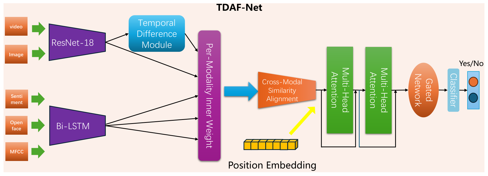
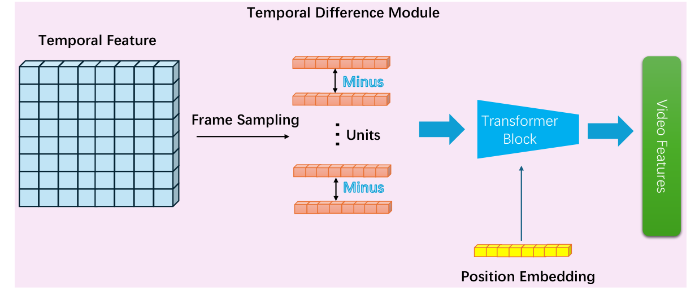
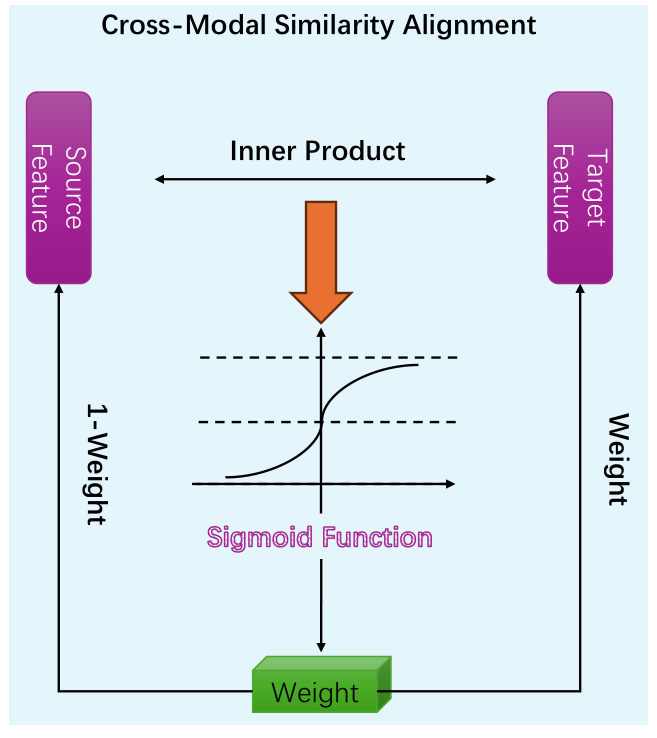
IEEE/CVF Conference on Computer Vision and Pattern Recognition Workshops (CVPR Workshop)
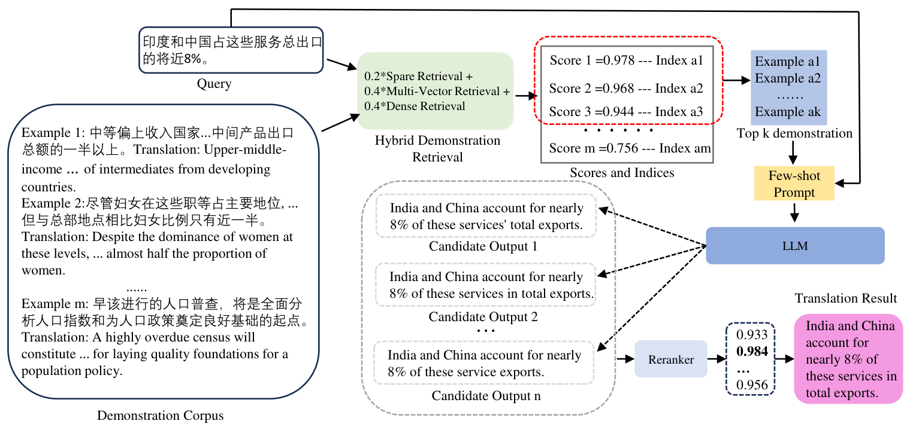
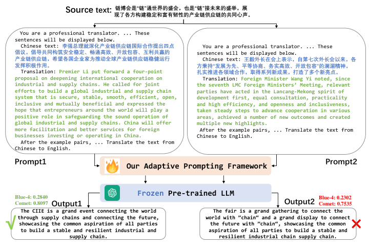
AAAI Conference on Artificial Intelligence (AAAI)
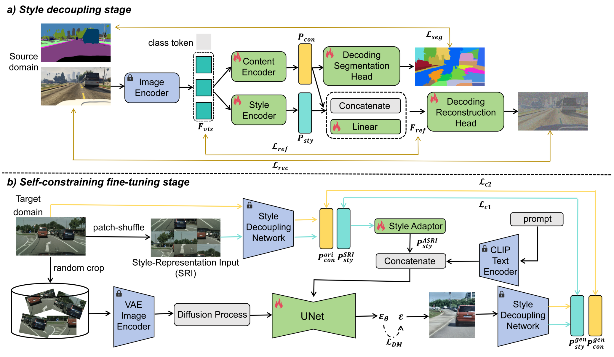
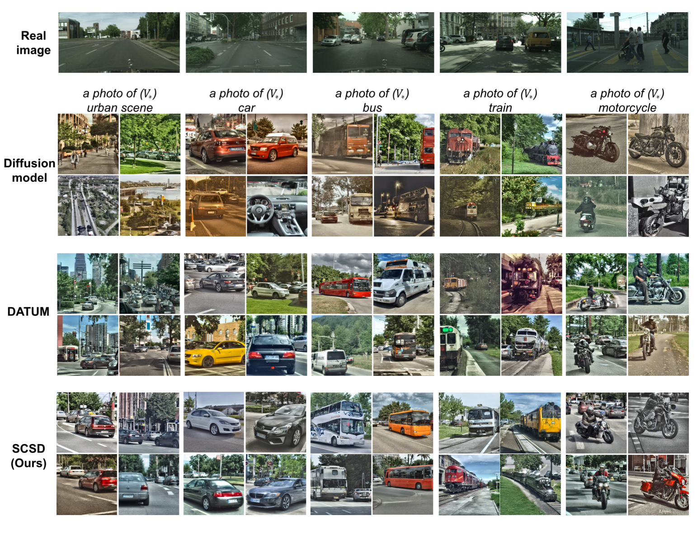
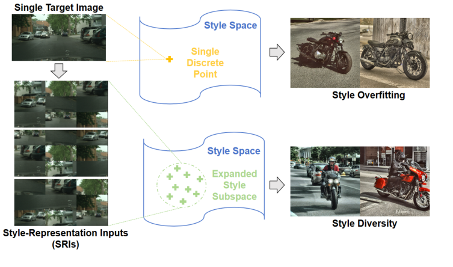
IEEE Transactions on Circuits and Systems for Video Technology (TCSVT)
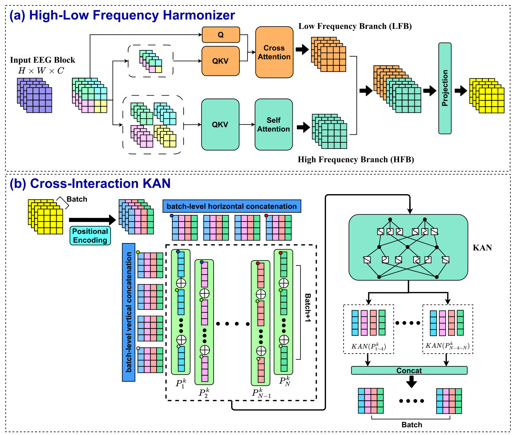
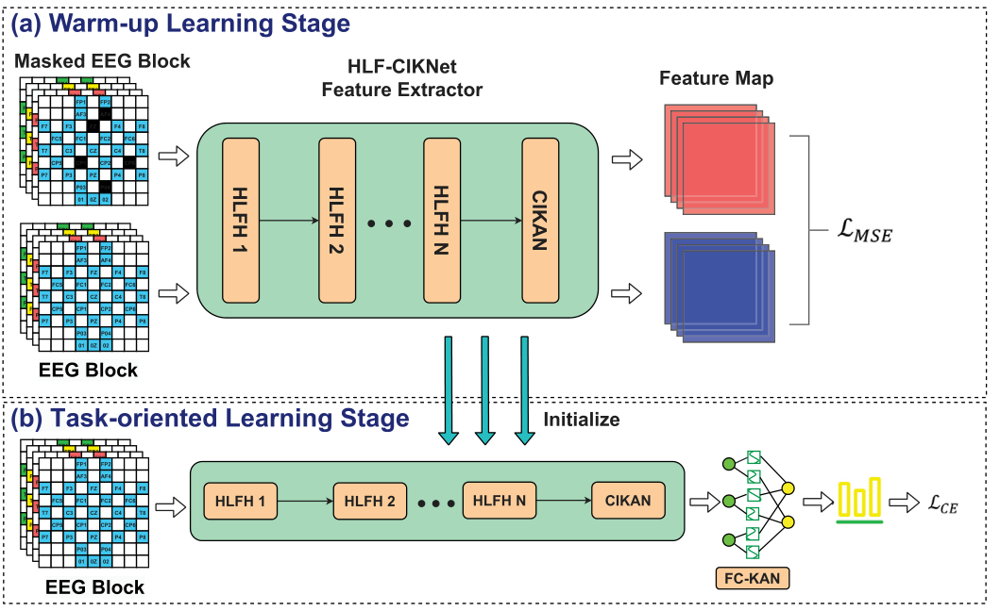
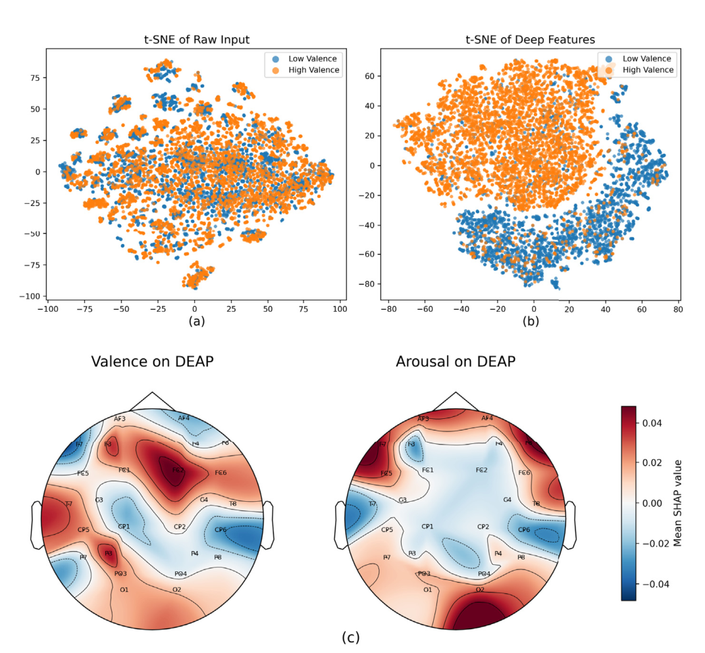
Biomedical Signal Processing and Control (BSPC)
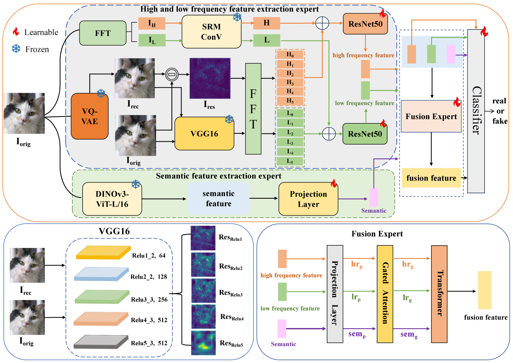
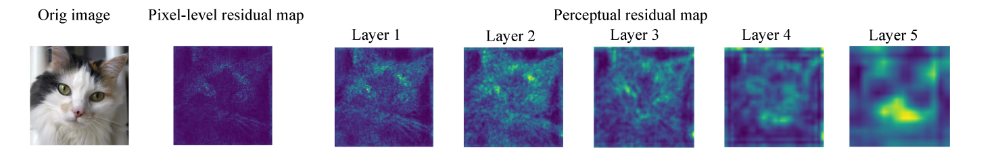
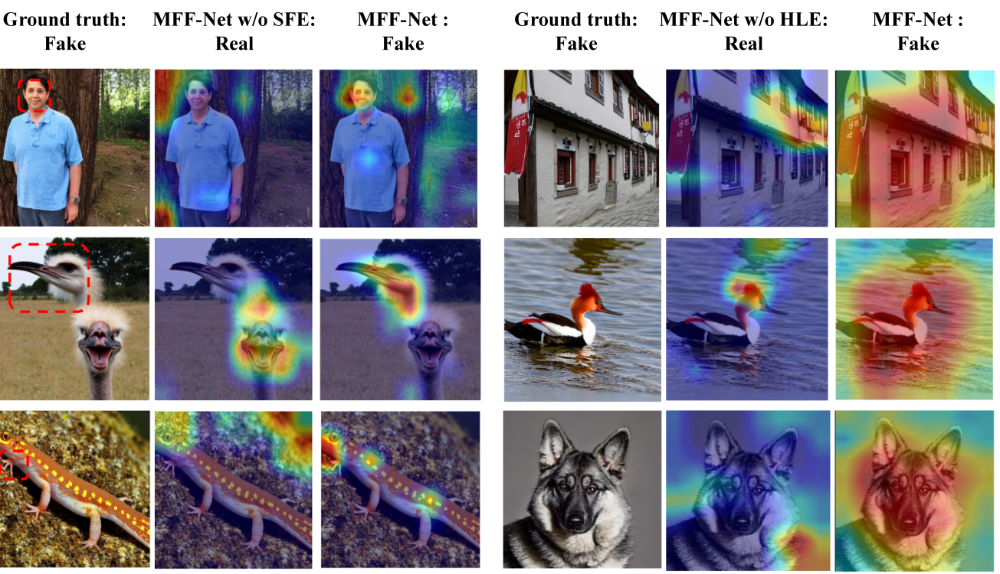
Expert Systems with Applications (ESWA)
Imprint (迹录) is an AI travel planning and diary system. Users can describe their travel aspirations in natural language, and the system will automatically recommend destinations, generate itineraries, and assist in recording and creating beautiful travel memoirs throughout the journey.
GitHubHuaxia Basketball Manager (华夏篮球联赛) is an AI-driven basketball simulation game set in the fictional Huaxia Basketball League. Featuring a realistic match engine, player training, trades, injuries, international scouting, and custom team and player configurations. Build your roster, manage the season, and chase the championship!
GitHubDreamGravity (梦有引力) is an AI-powered dream journaling and analysis tool that helps you capture every dream fragment. Record your dreams, decipher your subconscious, and build your personal dream universe.
GitHub脑电信号视觉图像重建方法、装置、设备及介质
运动伤病风险检测方法、系统及运动伤病风险部位定位方法、系统
基于频域解耦和交叉注意力的光伏发电预测方法与系统
一种基于多视图特征和知识蒸馏的水上环境监控方法
一种基于空间交互特征的跨被试脑电信号情绪识别模型训练方法、模型训练系统及情绪识别方法
一种智能防盗外卖存放装置及其使用方法
基于改进Transformer的评论情感分析软件
基于MAML元学习的外卖毯软件
基于粒子群算法的蜂群无人机协同任务规划软件
基于astar算法的复杂山路路径规划软件
基于Holt-Winters算法的地震信号震级预测软件
基于蜘蛛蜂优化算法的信号基站布局软件
基于计算机视觉的人脸特征识别分析软件
基于多源生物信号的智能运动伤病预警系统
基于多视图特征和知识蒸馏的水上环境监控系统
基于脑电信号层次编码的智能视觉还原系统
基于分离式模态共现信号指导的多模态推荐系统
一种基于大语言模型的文化垂直领域对话模型
基于OCR技术的电柜智能化接线识别校对系统
讯飞AI算法赛声纹迷雾复杂场景说话人确认挑战赛
讯飞AI算法赛高分辨率遥感影像变电站识别挑战赛
讯飞AI算法赛野生鬣狗个体识别挑战赛
Kaggle ROGII 井筒地质预测竞赛
CVPR 2026 第二届微视觉计算挑战赛
Kaggle 2026 NeuroGolf 锦标赛
Kaggle 宝可梦卡牌 PTCG AI 对战模拟挑战赛
讯飞AI算法赛面向受限场景的多语言语种识别挑战赛
讯飞AI算法赛面向说话人转写内容的角色分离挑战赛
2026年睿抗机器人开发者大赛智海算法调优赛题广东赛区
第十七届中国大学生服务外包创新创业大赛中部区域赛
广东工业大学本科生毕业论文创新奖
Kaggle 2025 大语言模型绘图挑战赛
第七届全球校园人工智能算法精英大赛算法创新赛
第二十七届中国机器人及人工智能大赛算法创新赛
第七届全球校园人工智能算法精英大赛算法创新赛广东赛区
米兰设计周中国高校设计学科师生优秀作品展
2025 全球校园人工智能算法精英大赛网络监督细粒度图像识别挑战赛广东赛区
2025 全球校园人工智能算法精英大赛智慧气象赛道全国选拔赛
中国好创意暨全国数字艺术设计大赛广东赛区
第十八届中国大学生计算机设计大赛广东赛区
第十六届蓝桥杯 Python 程序设计赛道广东赛区
第二十七届中国机器人及人工智能大赛算法创新赛广东赛区
第二十七届中国机器人及人工智能大赛算法创新赛广东赛区
米兰设计周中国高校设计学科师生优秀作品展广东赛区
美国大学生数学建模竞赛（MCM）
第二届粤港澳大湾区 AI For Science 科技竞赛
第六届全球校园人工智能算法精英大赛算法创新赛
2024 全球校园人工智能算法精英大赛超声乳腺影像 BIRADS 分类挑战赛
第六届全球校园人工智能算法精英大赛算法创新赛广东赛区
全国大学生数学建模竞赛广东赛区
睿抗机器人开发者大赛（RAICOM）算法调优挑战赛广东赛区
第五届 MathorCup 数学应用挑战赛大数据赛道
第二届国际高校数学建模竞赛
第四届天府杯全国大学生数学建模竞赛
第五届华数杯全国大学生数学建模竞赛
第十届全国大学生统计建模大赛广东赛区
第三届中国高校大数据挑战赛
第六届中青杯全国大学生数学建模竞赛
第十届数维杯国际大学生数学建模挑战赛
第十六届华中杯大学生数学建模挑战赛
第三届全国青年创新翻译大赛
第十五届蓝桥杯嵌入式设计与开发赛道广东赛区
第十五届蓝桥杯数字科技创新赛道全国选拔赛
第十一届大唐杯信息通信工程实践赛道广东赛区
第九届广东工业大学挑战杯
广东工业大学第五届数学建模竞赛
第九届中国国际大学生创新大赛广东工业大学外国语学院选拔赛
华为昇腾 AI 创新大赛广东区域赛
全国大学生数学建模竞赛广东赛区
第十四届 iCAN 创新创业大赛广东赛区
第二届大学生 AI 科技竞赛 AI 创新应用赛道
第十三届亚太地区大学生数学建模竞赛（APMCM）
深圳杯数学建模挑战赛
广东工业大学第四届数学建模竞赛
第十二届挑战杯广东工业大学外国语学院选拔赛
广东工业大学优秀毕业生
广东工业大学信息工程学院“十佳优秀毕业生”
广东工业大学第十一届“星耀工大，筑梦成长”十佳大学生
国家奖学金
“视源”一等奖学金
优秀学生一等奖学金
学习标兵奖学金
创新奖学金
优秀学生二等奖学金
创新奖学金
优秀学生二等奖学金
| Year | Added that year |
|---|